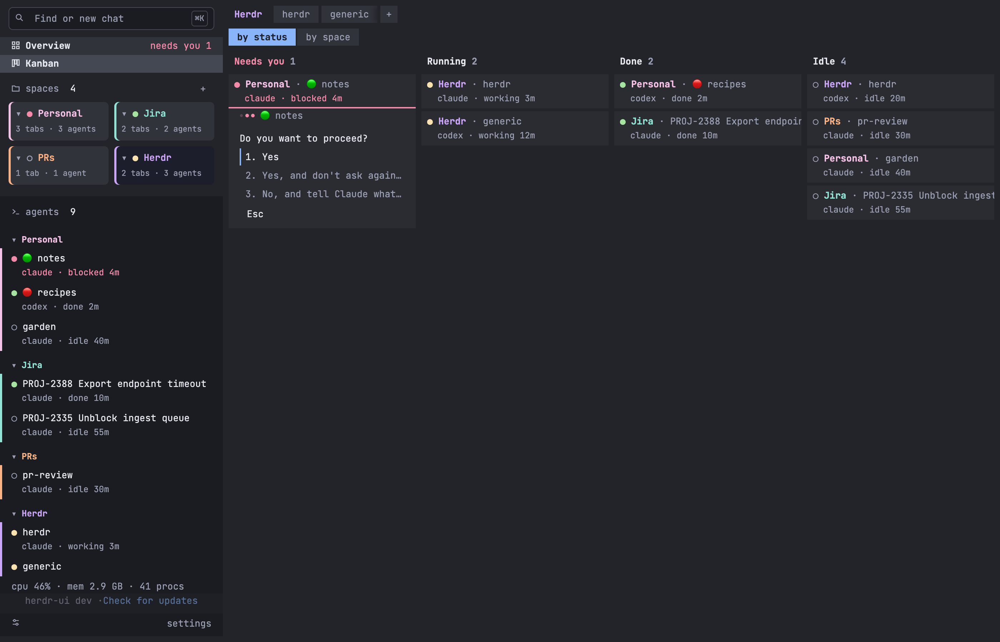
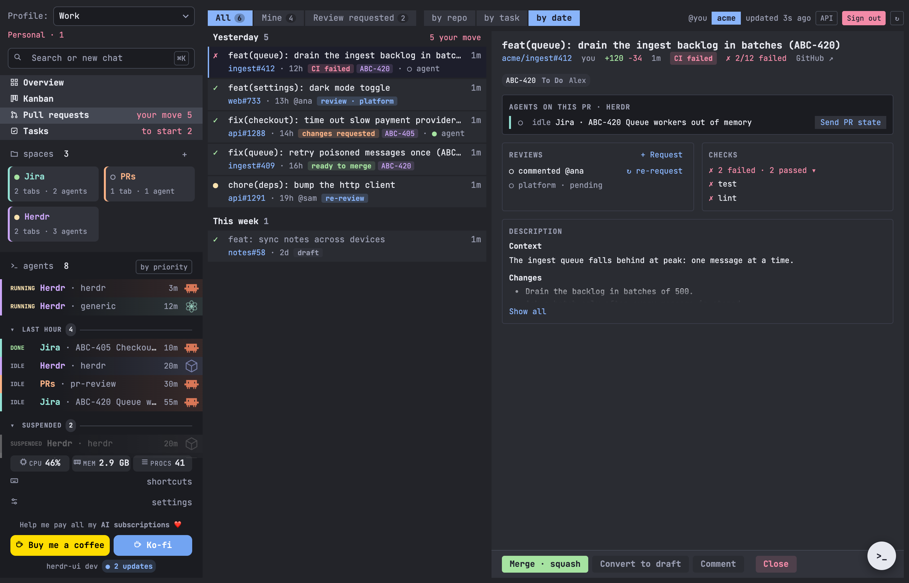
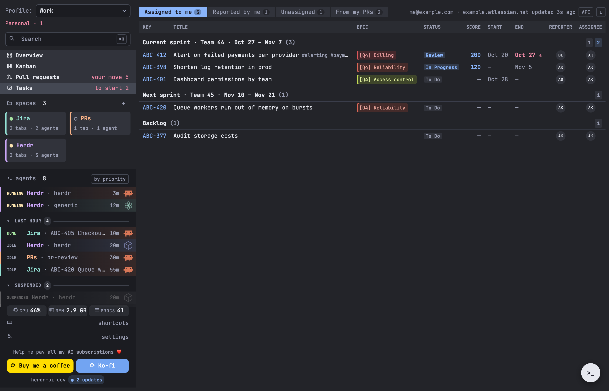
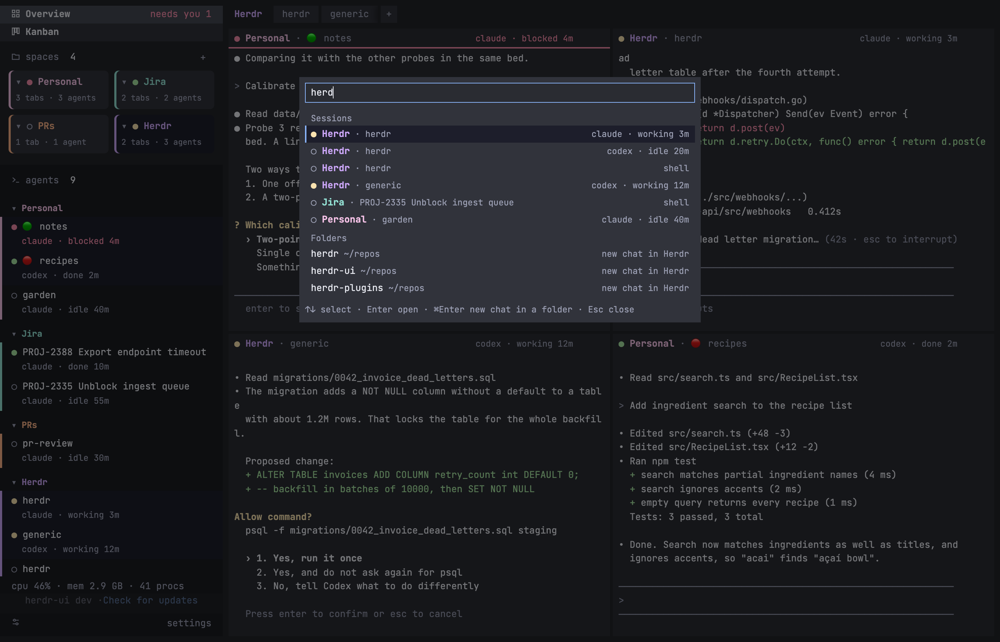

Live Overview
Everything that runs, up to four live terminals at once.
Kanban by status
Every agent, sorted by what it is doing, or one column per space.

Pull requests, tied to agents
Your PRs and the reviews asked of you, next to their agents. Sign in with GitHub from the app.

Jira tasks, by sprint
Your open Jira Cloud issues: current sprint, next and backlog. Read only, off until you turn it on in Settings.

Find anything with ⌘K
One search for every session and repo: ⌘K, a few letters, Enter.
~/repos or any folder, set in Settings.
What can I help you with in herdr today?
Open a codex chat in billing-api, in the PRs space
Done: tab billing-api in PRs, codex running.
Answer the one waiting in Jira with yes
Ask the assistant
A chat behind >_ or ⌘J that runs herdr for you.
- Plain words. Open a chat, answer an agent, tidy spaces.
- Keeps the thread. One session remembers what you asked.
- Out of the way. Its own hidden space; click outside to close.
Know without looking
The app tells you when an agent needs you, even in the background.
- Native notifications. Click one to land on that agent.
- Dock badge and bounce. The icon counts blocked agents.
- Your call. Pick what notifies, with a test button.
Seamless with herdr, better to look at
herdr-ui reads your herdr session as it is. GitHub and Jira switch on or off in Settings, nothing lost while off.
Your spaces, tabs and agents, as they are.
One Go binary, in the browser or as the macOS app.
Listens on 127.0.0.1; one anonymous daily ping, stats opt-in.
herdr-ui and herdr itself, without closing your agents.
Install in three steps
Open the .dmg and drag herdr-ui to Applications.
A setup walks through every feature; Settings › General › Run setup again reopens it.
Turn them on in System Settings for the badge and alerts.
See every agent at a glance
Download herdr-ui and open it next to herdr. Screenshots use sample data.